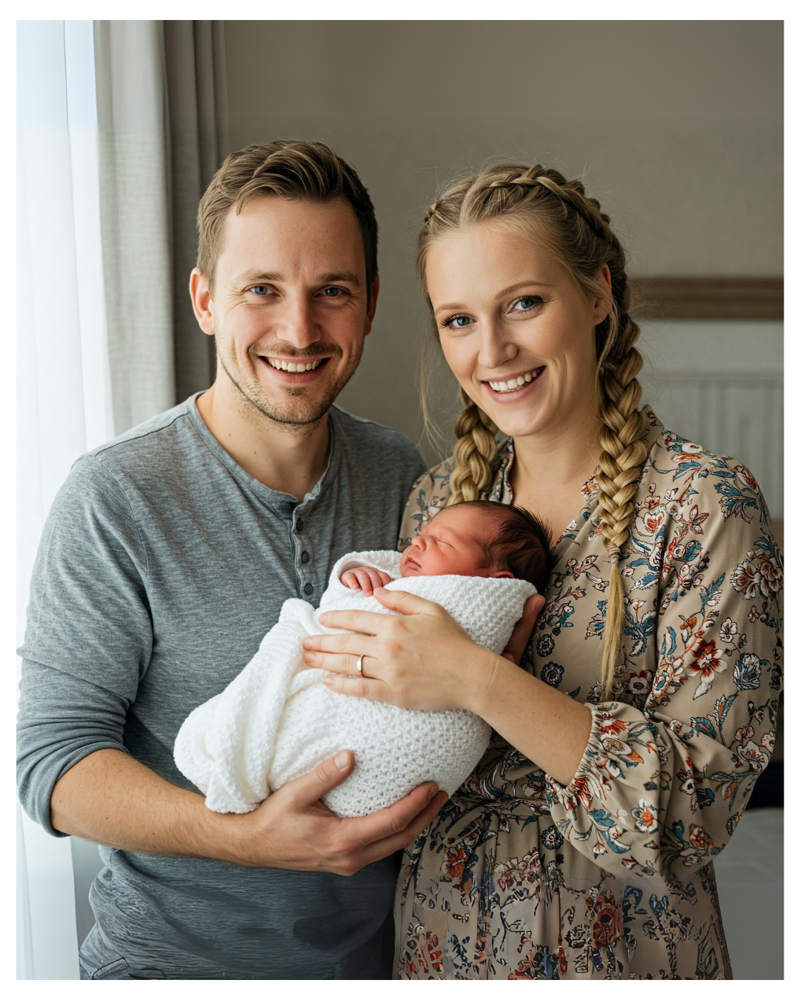

German Baby Names 2025: What's Hot, What's Not, and What's Making a Comeback!
Choosing a baby name? Oh, the excitement! It's a big decision, mixing tradition, personal taste, and maybe even a peek at what's trending. If you're expecting a little one in 2025 or just love names, let's dive into the wonderful world of German baby names! We've got the scoop on the reigning champs, the cool new kids on the block, and some blasts from the past making a surprising return.
And the Winners Are... Germany's Most Popular Picks!
It seems German parents have found some firm favourites! The top spots haven't changed much recently.
Top of the Pops: Girls
- Emilia: Still holding strong at number one nationwide! A frequent favourite. ⭐
- Sophia/Sofia: Right behind Emilia, sometimes even sneaking into first place depending on who's counting! These two are neck-and-neck. ❤️
- Emma: Consistently popular and rounding out the top three. ✔️
Top of the Pops: Boys
- Noah: King of the castle! This name has been the top choice for boys for several years running.
- Matteo/Matt(h)eo: Giving Noah a run for his money, sitting comfortably at number two.
- Elias: Another strong contender, frequently landing in the top three.
Why the Stability? It seems many parents lean towards names that feel familiar and fashionable, maybe choosing comfort over something totally unique. Makes sense!
Decoding the Vibe: What's Trending in 2025?
So, what styles are parents loving right now?
Trend Alert #1: Short, Sweet, and Vowel-tastic!
Think short, melodic names that roll off the tongue.
- Girls: Lots of names ending in '-a' (like Mia, Lina, Ella, Ida) or '-i'/'ie' (Leni, Lilly).
- Boys: Short and sweet wins here too (Luca, Leo, Theo), often featuring soft 'L', 'M', or 'N' sounds (Leon, Emil, Finn).
Trend Alert #2: Global Meets Local
It's a mix! You'll find internationally loved names (Liam, Noah, Emilia) alongside solid German classics.
- Global Stars: Emilia, Noah, Sophia, Emma, Liam, Luca.
- Biblical & Hebrew Hits: Noah, Elias, Hannah, Mia, Paul, David.
- German Heritage Heroes: Emil, Paul, Karl, Anton, Oskar, Ida, Frieda, Mathilda, Clara, Leni.
Trend Alert #3: Steady at the Top, Shifting Below
While the top 3 might seem set in stone, there's always movement just below. Names like Lia/Liah and Liam recently broke into the Top 10, showing things do change!
Trend Alert #4: Is Unisex the Future?
Gender-neutral names are getting more attention. Think Noa (yes, different from Noah!), Mika, Charlie, Luca, or minimalist picks like Liv and Mio.
Everything Old is New Again: Grandma & Grandpa Chic!
Get ready for a surprise – names from your grandparents' era are making a comeback!
Hello, Retro Revival!
Dust off the old photo albums, because these names are back:
- Girls: Gerda, Erika, Frida, Greta, Lieselotte, Hilda, Käthe, Irma, Wilma.
- Boys: Erwin, Kurt, Friedrich, Heinrich, Erich, Otto, Karl, Anton, Oskar.
On the Up and Up: Names to Watch in 2025!
Who are the rising stars predicted to climb the charts?
Recent Movers and Shakers
- Lia/Liah & Liam: Both broke into the Top 10 recently – definitely ones to watch!
- Bielefeld's 2024 Risers (Girls): Alea, Amelie, Ayla, Aurelia, Dua, Elli, Hailey, Inaya, Luna, Malia.
- Bielefeld's 2024 Risers (Boys): Emilio, Jano, Josef, Leano, Linus, Maleo, Marlo, Milan, Toni, Valentin.
- New to the Top 500 (Girls): Elodie, Rüya, Erika, Liora, Rania, Gerda, Nami, Estelle, Hava, Lima.
- New to the Top 500 (Boys): Troi, Sultan, Marek, Alaz, Said, Dian, Lior, Aziz, Quinn, Tamino.
Expert Predictions: What's Next?
- Keep an eye on Malia, Hailey, and Emilio – they might crack the Top 10 soon!
- Luna is gaining traction (hello, nature names!).
- Those retro names (Gerda, Erika, Kurt, Erwin) could spread further.
- Maybe more floral names like Viola, Iris, and Rose?
What's in a Name? Meanings Matter!
Beyond the sound, many parents love knowing the story behind a name.
- Emilia: Latin for "rival" or "industrious."
- Noah: Hebrew for "rest" or "comfort."
- Sophia/Sofia: Greek for "wisdom."
- Matteo/Mateo: Hebrew via Italian/Spanish for "gift of God."
- Emma: Germanic for "universal" or "whole."
- Elias: Hebrew for "The Lord is my God."
- Mia: Often linked to Maria, meanings range from "sea of bitterness" to "wished-for child" or "mine."
- Leon: Greek/Latin for "lion."
- Lina: Multiple origins - could mean "tender," "palm tree," or be short for other names.
- Theo: Often short for Theodore ("gift of God") or Theobald ("bold people").
- Mohammed: Arabic for "praised," hugely significant in Islam.
Notice all the biblical/religious names? They still hold a lot of cultural weight and positive vibes for many.
Location, Location, Location: Regional Differences!
Germany's a diverse place, and baby names reflect that! What's popular in Bavaria might differ from Berlin.
Berlin/Brandenburg & Big Cities
Mohammed is often #1 for boys here, reflecting diversity. Hannah topped the Berlin/Brandenburg list for girls in 2024. Hamburg loves names like Clara, Isa, Mads, and Mattis too.
Bavaria (South)
Often leans more traditional. Leon is frequently the top boy's name. Sophia is super popular for girls. You'll hear more names like Felix, Lukas, Maximilian, Ludwig, Katharina, and Theresa here.
Saxony (East)
The retro heartland! Mia and Matteo were #1 in 2024. Emil, Oskar, Karl, Frieda, Mathilda, and Clara are also popular.
North
Ella is a big hit for girls. Frieda topped the charts in Mecklenburg-Vorpommern recently. Besides the national faves, look out for unique Northern/Scandinavian names like Fiete, Jonte, Lasse, Alva, or Fenna.
West
Often mirrors the national average, though Mohammed tends to rank higher than nationwide. Noah, Matteo, Henry, Emilia, Sophia, and Lina are common choices.
So, What's the Perfect Name for *Your* Little One?
Phew! That's a lot to take in, right? The German baby name scene in 2025 is a cool mix of steady favourites, trendy short names, and surprising retro comebacks.
Whether you love the chart-toppers like Emilia and Noah, feel drawn to the rising stars like Lia and Emilio, or have a soft spot for a classic like Karl or Gerda, there's plenty of inspiration.
Remember, trends are fun, but the best name is the one you love. Say it out loud, see how it feels, and choose the name that brings a smile to your face. Good luck with your naming adventure!